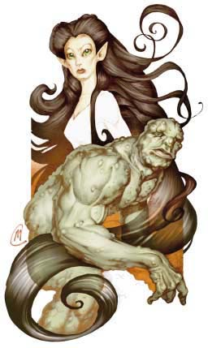

中型精类

| 生命骰： | 1d6�C1 (2 hp) |
| 先攻： | +5 |
| 速度： | 30 英尺 |
| 防御等级： | 13 (+1 敏捷，+2 皮甲)，接触 11，措手不及 12 |
| 基本攻击／擒抱： | +0/+0 |
| 攻击： | 匕首 +0 近战，或短弓 +1 远程 |
| 全力攻击： | 匕首 +0 近战，或短弓 +1 远程 |
| 伤害： | 匕首 1d4，或短弓 1d6 |
| 面宽／触及： | 5 英尺/5 英尺 |
| 特殊攻击： | 魅惑人类 |
| 特殊能力： | 免疫影响心灵效果，昏暗视觉 |
| 豁免： | 强韧�C1，反射 +3，意志 +2 |
| 属性： | 力量 10，敏捷 13，体质 9，智力 10，感知 10，魅力 13 |
| 技能： | 唬骗 +5，驯养动物 +2，躲藏 +7，知识（任一） +2，潜行 +7，察言观色 +4，侦查 +3，生存 +4 |
| 专长： | 精通先攻 |
| 地域： | 任何陆地及地底 |
| 组织： | 单独或小队（2�C4） |
| 挑战等级： | 1/2 |
| 宝物： | 标准 |
| 阵营： | 通常混乱（任意） |
| 进化： | 依职业等级 |
| 等级调整： | +1 |
精类以其对类人生物和巨人的好奇心（有些人会说是着迷）著称，有时某个精类会爱上这些生物中的一个。被称为精类沾染者的生物拥有一位半精类（half-fey）和一位类人生物或巨人祖先。（半精类将在本书稍后描述。） 精类沾染者是一个差异极大的群体――有些轻盈美丽，而另一些则丑陋粗野。有些像精灵（elf），有着尖耳朵和杏仁状的眼睛。其他的则更像巨魔（troll），皮肤多疣，四肢比例失调。无论如何，所有精类沾染者至少有一项超乎常态的特征或特质――例如色彩鲜艳的头发、羽毛般的眉毛，或是说话押韵的倾向。无论其实际外貌如何，所有精类沾染者都是魅力非凡的存在，走到哪里都能吸引注意。
精类沾染者没有统一的文化；他们要么成为离群索居的独行者，要么沉浸在都市社会中，品尝生活所提供的一切。他们也会被吸引到其他精类称之为家园的那些自然环境。大多数精类对精类沾染者反应友好，并将他们视为远房表亲。
精类沾染者很少将战斗视为严肃之事。他们喜欢戏弄对手，但当情势对他们不利时，他们也会真正发怒。他们在战斗中通常是令人困惑且反复无常的。
大多数精类沾染者首先会尝试使用他们的魅惑人类能力来避免战斗。若失败，他们会抵御攻击直到能够安全逃离为止。
魅惑人类 (Sp)：每天一次，精类沾染者可以如同施法般使用魅惑人类（charm person）。施法者等级等于其生命骰数，豁免 DC 11。
免疫影响心灵效果 (Ex)：精类沾染者免疫所有带有影响心灵描述符的法术和效果。
技能：精类沾染者在躲藏和潜行检定上有+2种族加值。
精类沾染者的偏好职业是吟游诗人（bard）或游荡者（rogue），不过那些在自然中隐居的通常是德鲁伊（druid）或巡林客（ranger）。精类沾染者牧师很罕见，因为大多数精类对崇拜神明有着强烈的反感。